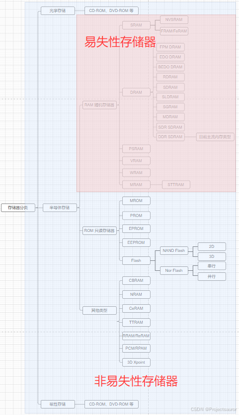

ROM、RAM 和 Flash 的区别
[toc]
在计算机的组成结构中，有一个很重要的部分，就是存储器。存储器是用来存储程序和数据的部件，对于计算机来说，有了存储器，才有记忆功能，才能保证正常工作。存储器的种类很多，按其用途可分为主存储器和辅助存储器，主存储器又称内存储器（简称内存），辅助存储器又称外存储器（简称外存）。外存通常是磁性介质或光盘，像硬盘，软盘，磁带，CD 等，能长期保存信息，并且不依赖于电来保存信息，但是由机械部件带动，速度与CPU相比就显得慢的多。内存指的就是主板上的存储部件，是 CPU 直接与之沟通，并用其存储数据的部件，存放当前正在使用的（即执行中）的数据和程序，它的物理实质就是一组或多组具备数据输入输出和数据存储功能的集成电路，内存只用于暂时存放程序和数据，一旦关闭电源或发生断电，其中的程序和数据就会丢失。
存储器分类有很多方法，下图是一个按照存储介质的不同的分类示意图（红底是==易失性存储器==，蓝底是==非易失性存储器==x）：

本文主要针对 ROM、RAM、Flash 这三种存储器进行介绍。
一、ROM
ROM（Read-Only Memory）是一种==只读存储器==，它的数据是在制造过程中被写入的，在工作是只能读出，用户无法对其进行修改，而不像随机存储器那样能快速地、方便地加以改写。ROM 可以存储固定的程序和数据，例如操作系统启动程序和固件程序等。由于其只读的特性，ROM 在电子设备中常用于存储固定程序和数据。
ROM 特性如下：
- ROM数据不能随意更新，但在任何时候都可以读
- 掉电可保留数据
ROM 有很多种，PROM 是可编程的 ROM，PROM 和 EPROM（可擦除可编程 ROM）两者区别是，PROM 是一次性的，也就是软件灌入后，就无法修改了，这种是早期的产品，现在已经不可能使用了，而EPROM是通过紫外光的照射擦出原先的程序，是一种通用的存储器。另外一种 EEPROM 是通过电子擦出，价格很高，写入时间很长，写入很慢。
ROM分类：
MROM：是一种特殊类型的 ROM，它使用金属线进行数据的编码和存储。PROM：可编程一次性（无法修改的 ROM）EPROM： 紫外线可擦除可编程的 ROMEEPROM： 电可擦除可编程的 ROM- 按字节进行删除和重写，所以写入时间很长，写入很慢
- 可以随机访问和修改任何一个字节
- 目前的 EEPROM 都是几十千字节到几百千字节的，绝少有超过 512k
二、RAM
RAM（Random Access Memory）是一种随机存取存储器，它可以被任意读取和写入。RAM 是电子设备临时存储数据的地方，它的数据在设备上电之后才能被存储，==断电后数据会被清空==。RAM 的速度快，读取和写入速度都比较快，但是容量相对较小。
RAM 分类：
- 静态 RAM（static RAM/SRAM）
- SRAM 速度非常快，不需要刷新电路即能保存数据，是目前最快的存储设备
- 集成度比较低，非常昂贵，多用于一级缓存、二级缓存（L1/L2 Cache）
- 动态 RAM（Dynamic RAM/DRAM）
- DRAM 特点
- DRAM 保留数据的时间很短，需要内存刷新电路，每隔一段时间，刷新充电一次，否则数据会消失
- 速度比 SRAM 慢，不过它比任何 ROM 都要快
- 价格便宜，内存一般都是 DRAM
- DRAM 分类（有很多种，其中目前最流行的一种是 DDR RAM）
- FPM DRAM（Fast page mode DRAM）：一种较旧类型的异步 DRAM，它通过允许以更快的速度重复访问单个“页面”内存来改进以前的类型。 1990 年代中期使用。
- EDO DRAM（Extended data out DRAM）：一种较旧类型的异步 DRAM，其访问时间比早期类型更快，因为它能够在上次访问的数据仍在传输的同时启动新的内存访问。在 1990 年代后期使用。
- DDR RAM（Date-Rate RAM）：这种 RAM 可以在一个时钟读写两次数据
- SDRAM：同步的 DRAM，即数据的读写需要时钟来同步
- DDR SDRAM（Double data rate SDRAM）：可以通过双泵（在时钟脉冲的上升沿和下降沿传输数据）在每个时钟周期传输两倍的数据（两个连续字）
- DRAM 特点
1、内存工作原理
内存是用来存放当前正在使用的（即执行中）的数据和程序，我们平常所提到的计算机的内存指的是动态内存（即 DRAM），动态内存中所谓的’动态’，指的是当我们将数据写入 DRAM 后，经过一段时间，数据会丢失，因此需要一个额外设电路进行内存刷新操作。
具体的工作过程是这样的：一个 DRAM 的存储单元存储的是 0 还是 1 取决于电容是否有电荷，有电荷代表 1，无电荷代表 0。
- 但时间一长，代表 1 的电容会放电，代表 0 的电容会吸收电荷，这就是数据丢失的原因；
- 刷新操作定期对电容进行检查，若电量大于满电量的 1／2，则认为其代表 1，并把电容充满电；
- 若电量小于1／2，则认为其代表 0，并把电容放电，藉此来保持数据的连续性。
从一有计算机开始，就有内存。内存发展到今天也经历了很多次的技术改进，从最早的 DRAM 一直到 FPMDRAM、EDODRAM、SDRAM等，内存的速度一直在提高且容量也在不断的增加。
三、Flash
Flash 是一种可擦写的存储器，它结合了 ROM 和 RAM 的优点。它的数据可以被任意读取和写入，并且可以擦除和重新写入。Flash 的数据在断电后仍然能够保持，因此它可以作为长期存储器使用。Flash 的速度相对于 RAM 较慢，但相对于传统的硬盘存储器来说速度快得多。
Flash特性：
- 可擦除可编程，跟 EEPROM 一样
- 断电不会丢失
- 可以快速读取数据
- Flash 跟 EEPROM 最大的区别是 Flash 按扇区操作，相对于 EEPROM 的改进就是擦除时不再以字节为单位，而是以块为单位
Flash 有两种：
- NOR Flash
- 用户可以直接运行装载在 NOR Flash 中的代码（主要是因为有 XIP 技术，片上执行，不像 NAND Flash 得将代码复制到 RAM 中才可以执行），这样可以减少 SRAM 的容量从而节约了成本。
- 地址线和数据线分开，可以实现 RAM 一样的随机寻址，可以读取任意一个字节
- 但擦除还是要以块为单位
- NADN Flash
- NAND Flash 没有采取内存的随机读取技术，它的读取是以一次读取一块的形式来进行的，通常是一次读取 512 个字节，采用这种技术的 Flash 比较廉价。用户不能直接运行 NAND Flash 上的代码，因此好多使用 NAND Flash 的开发板除了使用 NAND Flash 以外，还作上了一块小的 NOR Flash 来运行启动代码。
一般小容量的用 NOR Flash，因为其读取速度快，多用来存储操作系统等重要信息，而大容量的用 NAND FLASH，最常见的 NAND FLASH 应用是嵌入式系统采用的 DOC（Disk On Chip）和我们通常用的’闪盘’，可以在线擦除。目前市面上的 FLASH 主要来自 Intel，AMD，Fujitsu 和 Toshiba，而生产 NAND Flash 的主要厂家有 Samsung 和 Toshiba。
总而言之，NOR Flash 和 NAND Flash 比较，NOR 可以支持随机访问，支持 XIP，NAND 不行；NOR 容量小，读的比 NAND 快；NAND 的容量较大，虽然读起来也快；NOR 写擦除都很慢，所以一般放代码段，而 NAND 写和擦除都很快，所以没有这个应用上的限制。